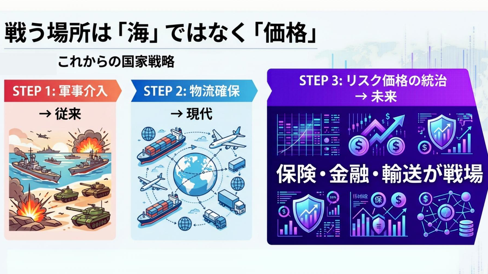
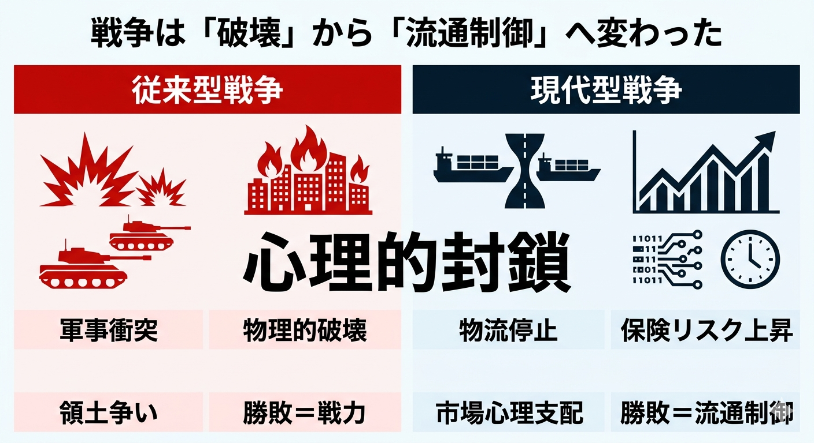

世界の石油が途絶えたのではない、むしろ「国家の呼吸」が静かに締め上げられているのである。2026年2月28日に始まったホルムズ危機は、従来の戦争観を根底から書き換えた。1日あたり1,100万バレルの供給喪失という数量は、オイルショックを上回る。だが、真に注目すべきは「不足」ではなく「不確実性」が支配した点にある。海峡は「完全封鎖」ではないのに、保険料とリスクが物流を麻痺させ、結果として市場は封鎖と同等の挙動を示した。
この「心理的封鎖」こそ、21世紀型戦争の核心である。ここに、従来の地政学が見落としてきた逆説がある。すなわち、戦争はもはや「破壊」ではなく「流通の制御」によっても勝敗が決まるという点だ。マキャベリは「君主論」で、国家の安定は軍事力に依存すると説いた。しかし現代においては、軍事力そのものよりも、物流・金融・保険といった制度的回路の支配こそが、より致命的な力を持つに至った。ホルムズ危機は、その転換点であった。

日本の対応は、この新しい戦争様式に対する適応の遅れを露呈した。確かに、国家備蓄の放出や代替調達の確保は、原油というマクロ資源の観点では一定の成功を収めた。燃料は枯渇しなかった。だが同時に、塗料、樹脂、医療資材といったミクロ資源の供給は急速に詰まり、産業と生活は静かに侵食された。シンナーの調達率が2.7%にまで落ち込んだという事実は象徴的である。
ここに本質的な断絶がある。国家は「量」を見ていたが、現場は「流れ」を失っていた。ホッブスが描いたリヴァイアサンは、暴力の独占によって秩序を維持する概念であった。しかし現代国家は、暴力ではなく供給網の連続性によって生存している。流れが止まれば、国家は戦火を交えずとも機能不全に陥る。
さらに深刻なのは、この危機が同盟の性質をも変質させた点である。米国は艦船派遣を求め、日本は慎重姿勢を維持した。この齟齬は単なる外交的温度差ではない。「誰が流通を守るのか」という責任の所在が曖昧なまま、同盟が運用されている現実を示した。ロックが説いた社会契約は、相互の義務によって成立する。だがホルムズにおいて、その義務は共有されていなかった。
反論は容易である。日本が軍事的関与を強めれば、エスカレーションのリスクは高まる。専守防衛の原則を逸脱しかねない。しかし、その議論は「関与しないことが中立である」という前提に依存している。実際、関与しないこともまた一つの選択であり、その結果として経済的損害を受け入れるのであれば、それは消極的な参戦に等しい。問われるのは、「どの領域で関与するのか」だ。

軍事的直接介入か、あるいは保険・輸送・金融の安定化か。ここで想定外の視点が浮かび上がる。日本が担うべきは「護衛艦の数」ではなく、「リスク価格の統治」にあるのではないか、という問題だ。保険料の高騰こそが封鎖の実体であるならば、そのコストを国家が引き受ける仕組みを構築することは、軍事行動に匹敵する戦略的意味を持つ。
これはアーレントの言う「権力」の概念にも通じる。権力とは暴力ではなく、人々の行為を組織する能力である。市場心理を制御し、物流の信頼を回復すること——それはまさに現代的な権力の行使に他ならない。
歴史を振り返れば、日本は幾度も「見えない危機」に遅れた。昭和初期、経済封鎖の兆候を過小評価し、結果として破局へと至った記憶は重い。だが同時に、戦後の復興期には、制度と供給網を再構築することで奇跡的成長を遂げた。この両義的な歴史は、現在への示唆を含んでいる。
ホルムズ危機は、単なる中東紛争ではない。それは「供給網有事」という新しい戦争形態の到来を告げる序章である。そして日本は、その最前線に立っている。問題は、我々がそれを戦争として認識しているかどうかに尽きる。
バークの言葉を借りれば、保守とは変化を拒むことではなく、変化を制御する知恵である。いま必要なのは、危機に反応する政治ではなく、危機の構造を理解し、それに適合する制度を構築する政治である。国家は砲声によってではなく、静かな不足によって崩れる。問われているのは勇気ではなく、認識だ。そしてその認識こそが、次の50日を決定する。